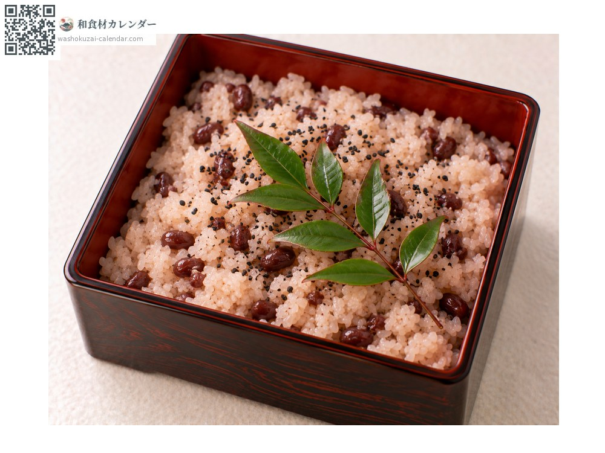
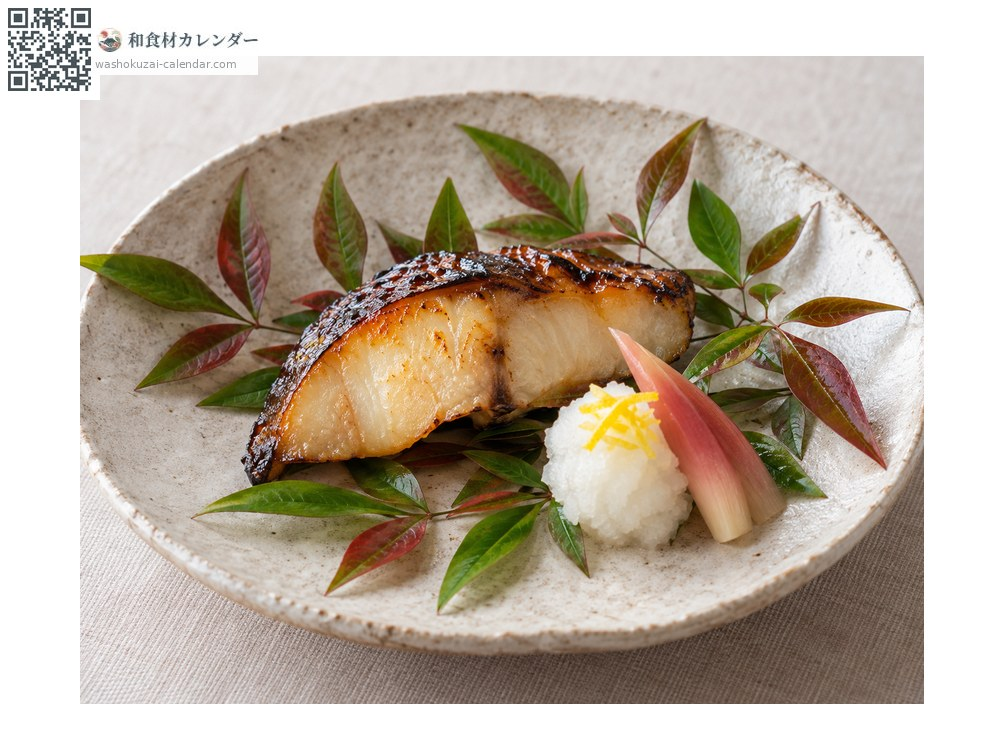
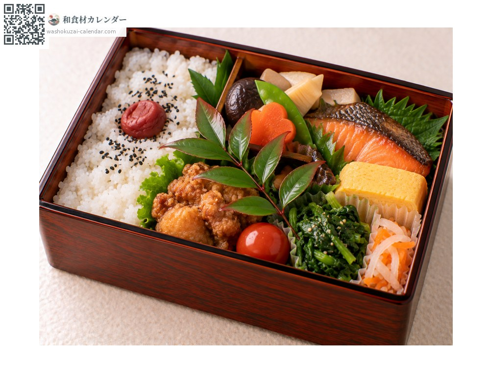

Vegetables
Nandina leaf (decorative)
南天 なんてん nanten
Also known asnanten
No peak season recorded

When it is at its best
Jan
Feb
Mar
Apr
May
Jun
Jul
Aug
Sep
Oct
Nov
Dec
In seasonAvailable
How to cook

With sekihan
A sprig laid on red rice in a box or tiered container. A fixture at celebrations.

As a lining
Laid on a plate or tray with the food arranged on top; the glossy green sets it off.

Dividing a bento
Placed between dishes in a packed box, a long-standing practice.
How to choose
Glossy, deep green leaves with no damage, on a well-formed sprig.
Storage
Wrap in damp paper, seal and refrigerate. Not edible; do not eat it.
Main areas
Good to know
Its Japanese name suggests turning away misfortune, which makes it an auspicious plant for celebrations. Compounds in the leaf are held to slow spoilage, so laying a sprig on red rice serves both practical and symbolic ends. It is a decoration, not food.
At their best around the same time
 Negi sprouts
Negi sprouts Red water pepper sprout
Red water pepper sprout Daikon sprouts
Daikon sprouts Beach silvertop
Beach silvertop Edible chrysanthemum flower
Edible chrysanthemum flower Edible snapdragon
Edible snapdragon Edible mini rose
Edible mini rose Clubmoss (decorative)
Clubmoss (decorative)